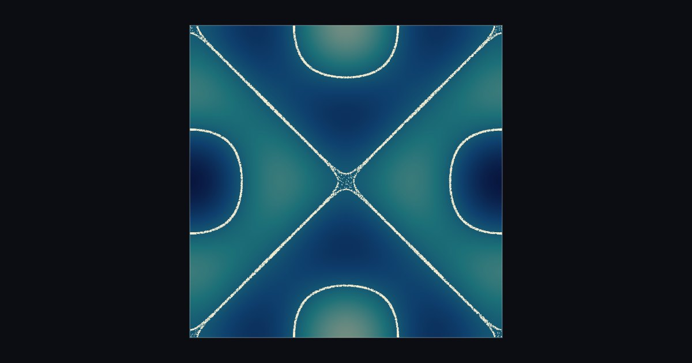

Math Explorer · Waves & Cymatics
Waves & Cymatics: interference, a wave tank and Chladni plates
Ripples that add up and cancel out, and sand that dances into patterns on a ringing plate.

Start exploring Waves & Cymatics →
Drop two stones in a pond and the ripples cross, adding up in some places and cancelling in others. That interference is how light shows it is a wave. Math Explorer sums ripples exactly and simulates a wave tank you can fill with slits, a lens or a moving source.
Scatter sand on a metal plate and make it ring, and the sand gathers along the lines that stay still, Chladni patterns. Here the plates come in six shapes, including a guitar, each solved from the wave equation, and the sand really moves. A plucked string shows its harmonics, the same ones you hear.
Things to try
- Send waves through two slits and watch the stripes appear
- Ring a Chladni plate and watch the sand settle into its pattern
- Try the guitar-shaped plate
- Pluck a string and watch its harmonics
- Play music and watch the ripples move with it
Start exploring Waves & Cymatics →